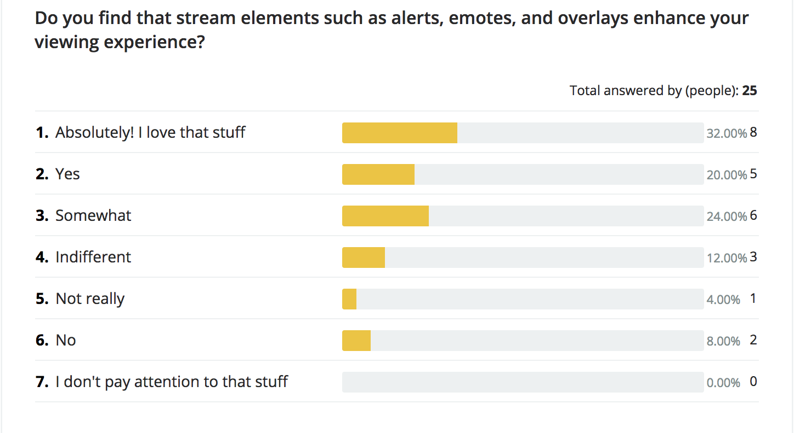
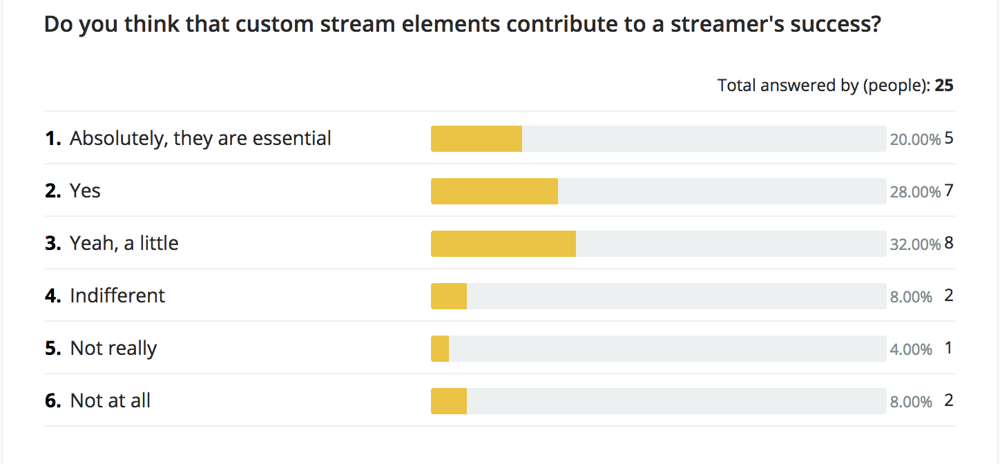
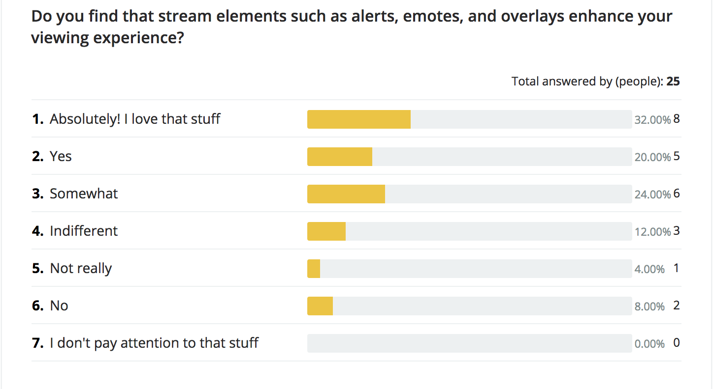
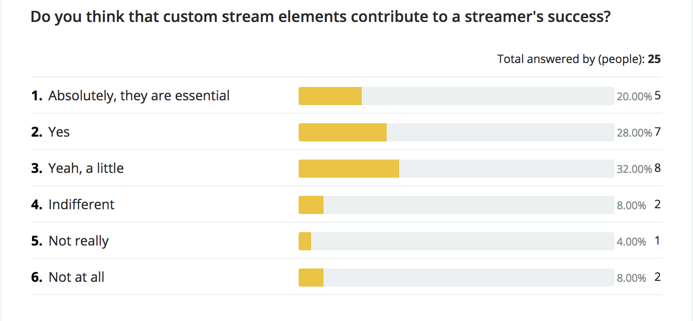
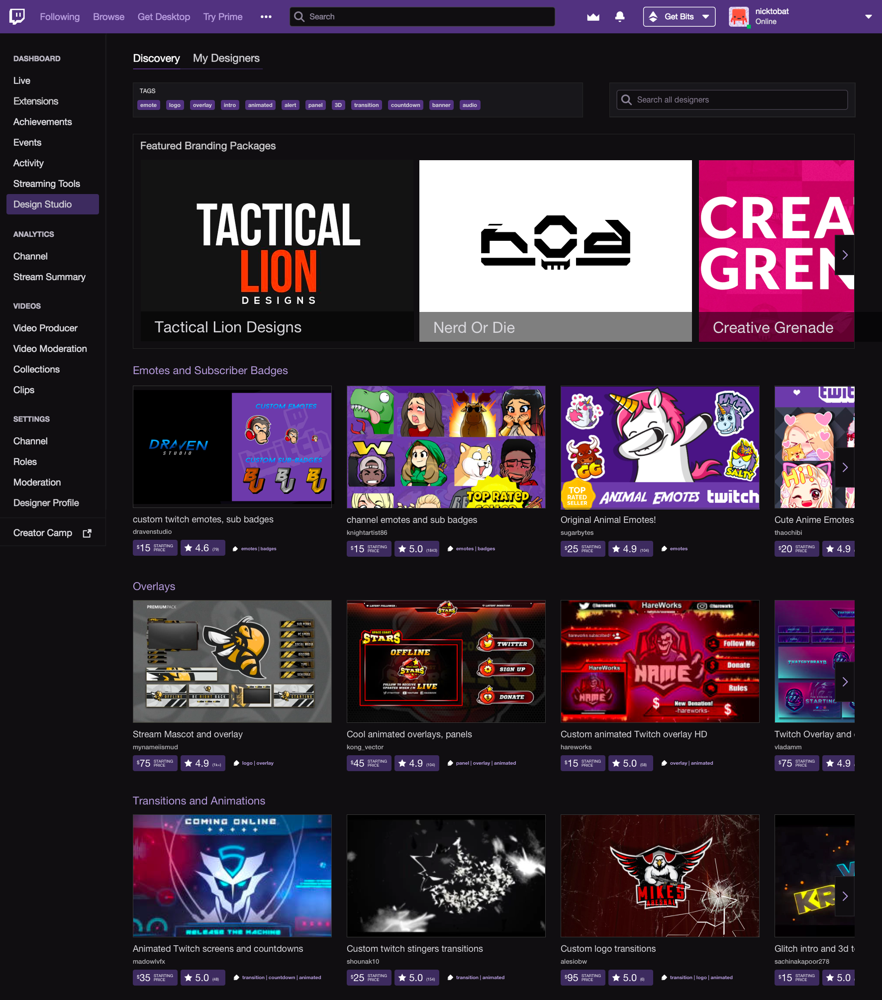
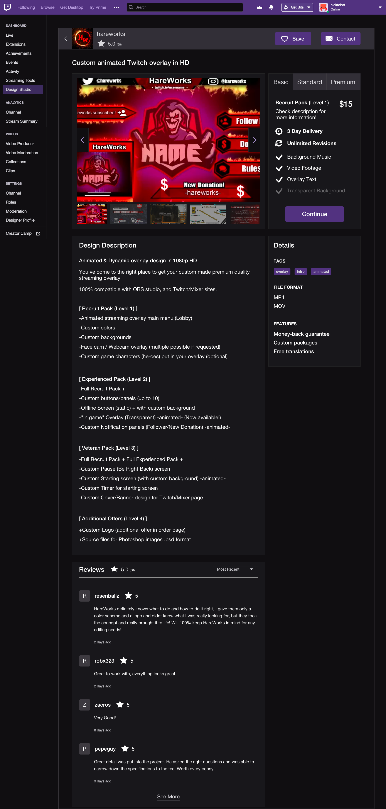
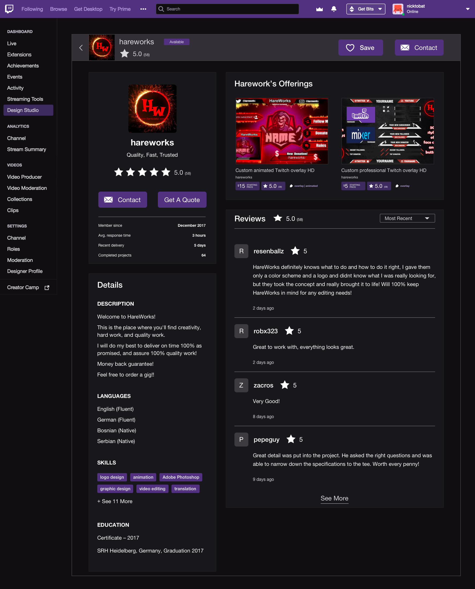
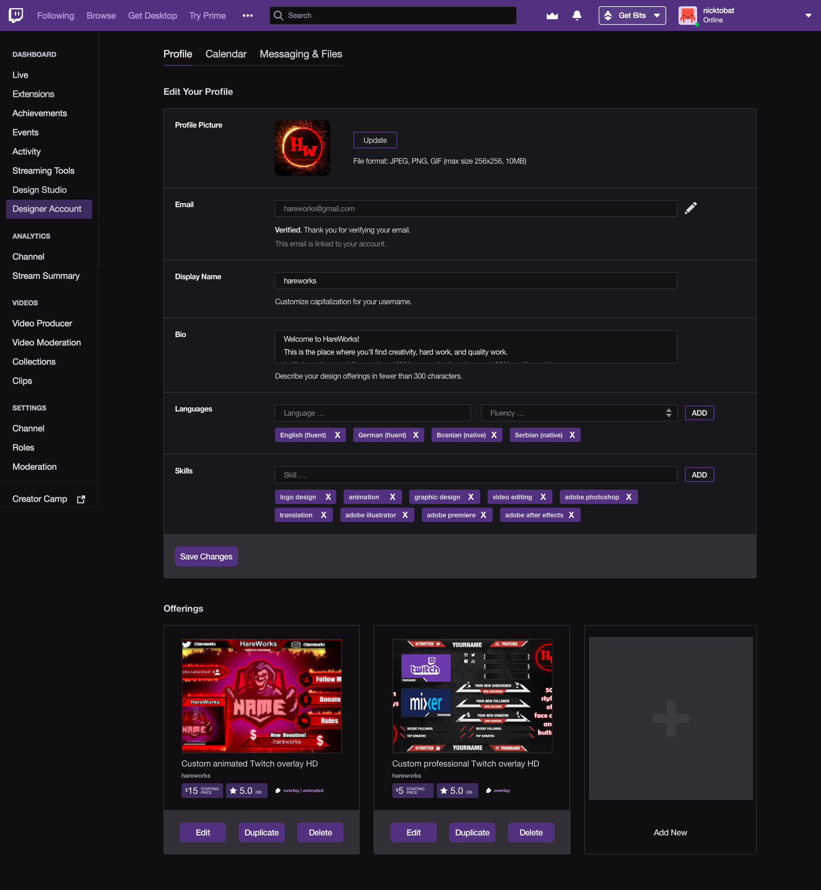
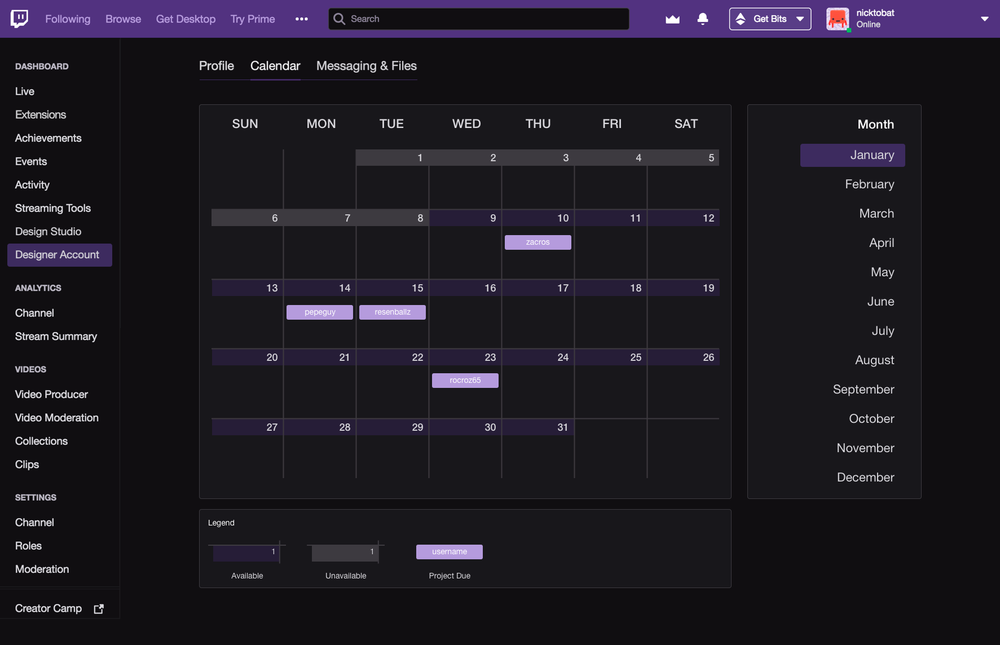
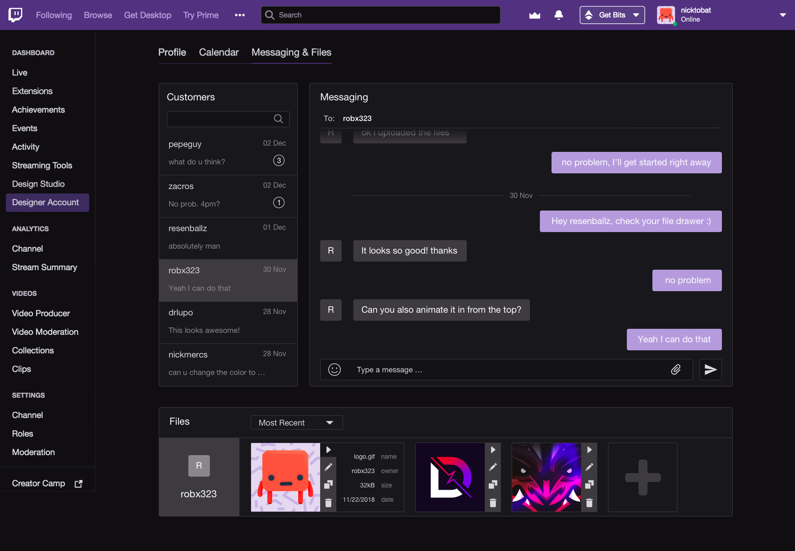

TWITCH DESIGN STUDIO
The Twitch Design Studio is a marketplace connecting streamers directly with designers in order to "up their game."
Twitch
CLIENT
UI/UX Design
DISCIPLINE
Design Marketplace
PRODUCT
The Twitch Design Studio allows any streamer to get their unique brand up and running quickly.
THREE C's
1. CONTEXT
More than a million people are watching Twitch at any given moment on any of over 40,000 channels. So what is Twitch? Let's back up for a moment. Twitch.tv is a live streaming video platform mainly focused on video games and eSports competitions. Twitch's Affiliate program lets streamers earn money through subscriptions, Bits (a platform-specific donation currency), and commissions on video games or in-game item sales.
These stats really blow my mind. Who knew video games were cool?
Each Twitch streamer has a channel with a profile, bio, chatroom, and, of course, live streaming video. The video feed is dynamic, displaying not only the source video, but also overlays, animations, and alerts. The chatrooms are full of subscriber emotes, which are obtained by subscribing to individual streamers. Let's take a look at a typical Twitch channel to get an idea of the different elements:
Dissecting the various elements of a Twitch streamer's channel.
The important thing to note about all of these elements, henceforth referred to as stream elements, is that each one was designed by someone. What I noticed while browsing through channels, and what inspired this project, was the fact that stream elements differ vastly in quality from stream to stream, and this impacts the viewing experience.
2. CHALLENGE
The challenge here was to figure out a way to bring design onto the Twitch platform. Currently, streamers are forced to either create custom elements on their own, or go outside the platform and look for designers on freelance sites such as Fiverr. This disconnect leads to a wide gap in the viewing experience between those streamers who make the effort to find stream elements off-platform and those streamers who use the default settings. Additionally, I wanted my solution to benefit all three parties in the equation: Twitch, streamers, and designers.
3. CONCEPT
The Twitch Design Studio is a marketplace within the Twitch platform allowing streamers to easily connect with designers and find just the right custom emotes, alerts, and more for their channel. This benefits streamers because they can set up custom elements for their channel without ever leaving the platform or having to rely on other sites they may not even be aware of. It benefits designers as it provides another platform for them to show off their work and get new clients. And it benefits Twitch by adding a whole new set of users (designers) and provides additional features for their existing user base.
RESEARCH
My research was mainly conducted by browsing through Twitch channels and freelancing sites. I wanted to get a feel for the variety of stream elements out there, and also audit popular sites like Fiverr to see what works best in terms of UI and UX.
I also conducted a survey on the Twitch subreddit to get some baseline knowledge and deeper insights about the experience of obtaining stream elements and of streaming in general. Some of the most important results are included below:
 



As you can see, the majority of respondents use custom stream elements, agree with their viewing enhancing properties, and agree that custom stream elements contribute to a streamer's success. My concept was validated, and I was ready to start bringing it to life.
Beautifully designed (and free!) survey brought to you by Survicate.
DESIGN
I knew I would be designing screens based on the existing Twitch interface, but I still needed to figure out exactly where they would be housed and how the experience would flow from screen to screen. I decided that the most logical place to access the Twitch Design Studio would be from the user Dashboard. The Dashboard already contains most of your settings and streaming tools, and in fact has a sort of marketplace already in the Extensions page, allowing users to add a broad range of extras to their channels.
A look at the Twitch Live Dashboard and Extension discovery pages.
LO-FI
With all of my research insights and design discovery in hand, I was ready to start designing. I began where all good design should: with pen (or pencil) and paper. I had a good idea of how the end product would look, and I wanted to sketch it out to ensure all the necessary elements were appropriately included.

I should get some of those dot paper notebooks. These lines aren't helping anyone.
HI-FI
Once I was satisfied that my sketches met all the requirements, I hopped into Sketch to create the prototype. My final design leans into Twitch's dark mode UI and attempts to reuse as many components from Twitch's existing library as possible, in order to reduce the load on both designers and developers if this feature were to be added.
The screens you are about to scroll through are, in order:
- 1. Design Studio
This is where users can view all of the different designers' offerings by category. - 2. Design offering
A detail screen of the offer, requirements, reviews, etc. - 3. Designer profile
A detail screen of the designer's profile, bio, skills, etc. - 4. Designer account settings 1
This is where designers update their profile and offerings. - 5. Designer account settings 2
This is where designers set their availability for new projects. - 6. Designer account settings 3
A messaging and file management system.
1. Design Studio home
2. Design offering
3. Designer profile
4. Designer account settings 1
5. Designer account settings 2
6. Designer account settings 3
I do love a good Dark Mode.
WRAP-UP
Ultimately, I wanted to create a platform to connect streamers to designers. I believe my designed solution succeeds in this goal, providing a benefit for both and adding to Twitch's user base. Designers get to market their skills to millions more users. Streamers get easy access to countless designers, allowing them to find just the right custom elements for their channel. And Twitch, of course, gets a 10% cut of each transaction AND more engagement with their platform.
That's a wrap!